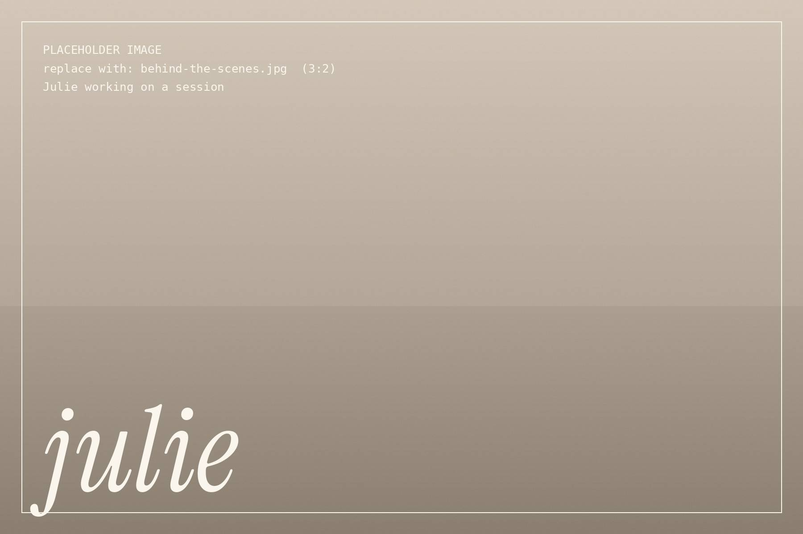

Hello, I’m Julie.
I make photographs of people, of dogs and other animals, and of the outdoors that holds them.

How I got here
I’m a photographer based in Canandaigua, New York, [where I grew up / where I’ve lived since…]. [How and when you started photographing.]
[Anything else you’d like clients to know: family, animals at home, what you do when you’re not photographing.]
A single line, in Julie’s words, about why she does this work.
How I work
Philosophy & approachDraft for Julie to reviewThe paragraphs below are a starting point written in Julie’s voice. Edit them so every line is true to her, and delete this note.
Good photographs come from paying attention, not from directing.
I’d rather wait for the real moment than build a fake one. Most of a session is walking, talking and watching: for the laugh after the serious face, the head tilt, the wind catching a coat. I work in natural light and choose the time of day around it.
I want you to recognize yourselves in the pictures. Not a polished version of you, but you on a good day, with the people and animals you love.
What I love photographing
- 01
People
The way families lean into each other without thinking, and the small private looks between two people. I keep sessions easy so those moments have room to happen. [Add a sentence of your own here.]
- 02
Dogs & animals
Animals don’t pose and don’t pretend, which is exactly why I love photographing them. Give me a muddy retriever, a nervous rescue or a curious barn cat and some time. [Mention any animals of your own.]
- 03
The outdoors
The Finger Lakes give me lake light, hillsides, woods and wild weather to work with. The landscape is never just a backdrop; it’s part of the story. [Name a favorite place or season.]

What to expect
- 01A real conversation before anything is booked, so I understand what matters to you.
- 02Help choosing a location and time of day, and simple advice on what to wear.
- 03No stiff posing. Gentle direction when it helps, and plenty of room to just be yourselves.
- 04Patience with animals, children and anyone who “hates having their photo taken.”
- 05Your edited photographs delivered [how and when]. Details for each session are on the pricing page.
See the work, then say hello.
Browse the portfolio to get a feel for how I photograph, or send a note and tell me what you have in mind.